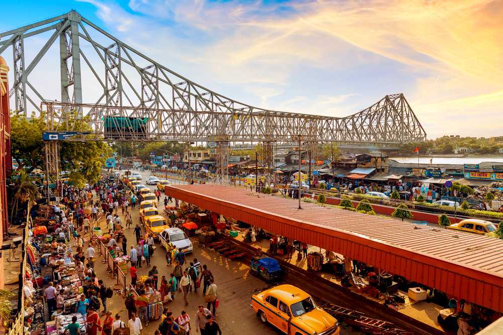
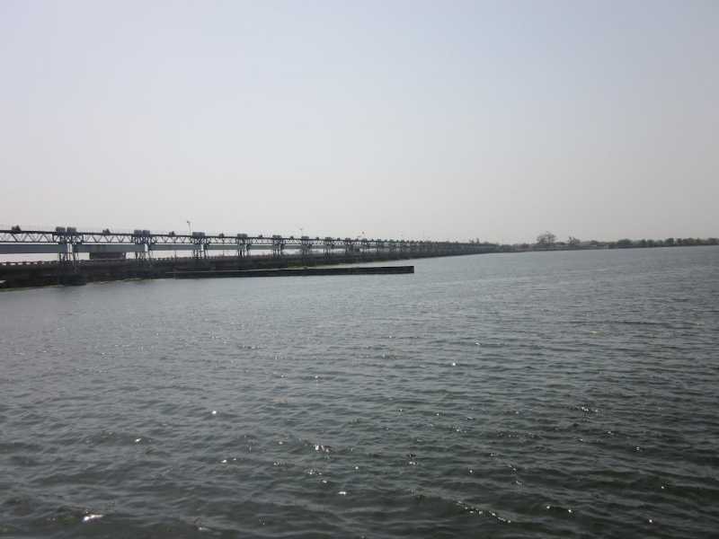
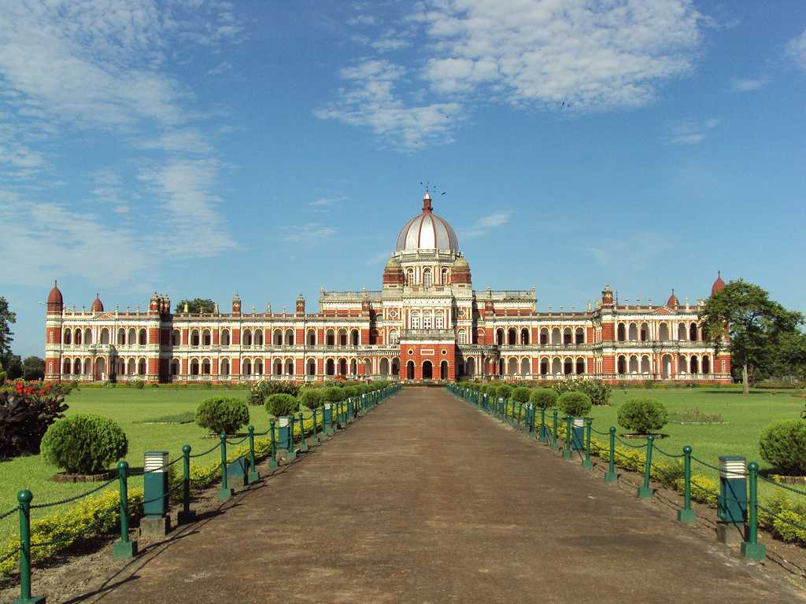
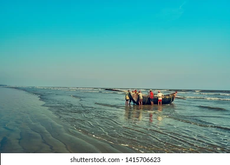
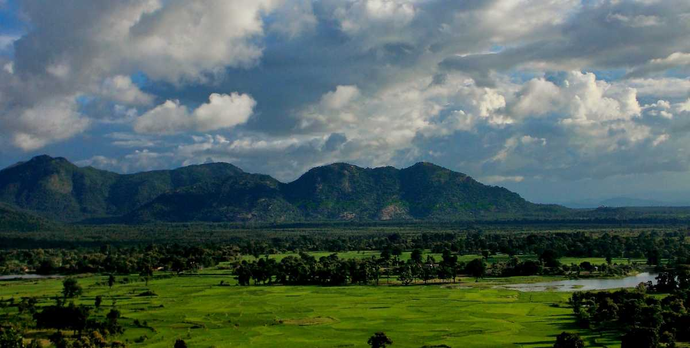
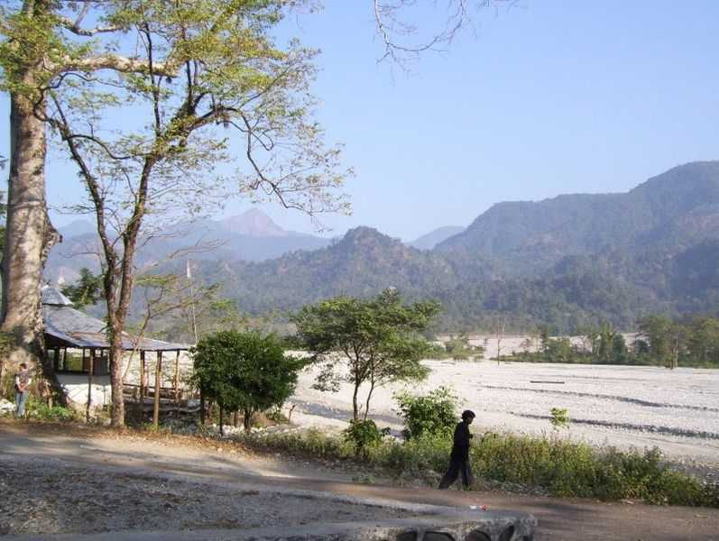

Kolkata, formerly Calcutta, is the capital and largest city of West Bengal, known as the "City of Joy" and a major cultural and commercial hub in eastern India, located on the eastern bank of the Hooghly River.
Darjeeling, a hill station in West Bengal, India, is famed for its tea plantations, scenic views of the Himalayas, and the UNESCO-listed Darjeeling Himalayan Railway (Toy Train). It's also known as the "Queen of the Hills".
Dooars, meaning "doors" in Bengali and other languages, is a region in the foothills of the Eastern Himalayas, serving as a gateway to Bhutan and northeast India, known for its lush forests, tea gardens, and rich wildlife.

Durgapur is a major industrial city and planned urban agglomeration in West Bengal, India, known as the "Steel City of West Bengal" and nicknamed the "Ruhr of India" for its steel industry. It's located in Paschim Bardhaman district, and is a significant industrial hub and economic center in the region.
Bankura, located in the western part of West Bengal, is known for its terracotta art, particularly the Bankura horse, and its rich cultural heritage, including terracotta temples and the Baluchari saree.

Cooch Behar, once the province of Koch dynasty, is a small planned town in North West Bengal Coch Behar makes up as a good option for weekend getaways for the eco-tourists along with those with an inclination towards history and archaeology.
Lolegaon, a Lepcha village in West Bengal, is a peaceful, off-the-beaten-path destination known for its natural beauty, panoramic views of Mount Kanchenjunga, and the opportunity for a tranquil escape from city life.

With more and more money being pumped into beaches all around the world to turn them into synthetic poolsides, Shankarpur gives you the luxury of experiencing the thrill of isolated beaches, calming winds and that typical old world charm

Purulia is a district in the western part of West Bengal, India, known for its undulating topography, hilly terrains, and the red soil and "Palash" flower landscape. It's part of the Chhotonagpur plateau and is a popular destination for tourists seeking serene beauty and adventure.

Known largely for being adjacent to Buxa Tiger Reserve, Rajabhatkawa has more to offer than just this. In addition to the Tiger Reserve, it has some beautiful ancient temples, nature centers and much more.
Situated on the banks of rivers Murti and Raidak in the Jalpaiguri district of West Bengal, the Gorumara National Park is a site that you cannot miss to afford on your next trip. Spread over an area of 80 sq.km. it sits prettily at the foothills of Great Himalayan mountains and has a large variety of flora and fauna.
Mandarmani, located around 170 km from Kolkata in West Bengal, is a popular beach destination known for its long, motorable beach. What sets it apart from other coastal destinations is its relatively lesser commercialized charm, making it perfect for those who prefer quieter vacations.